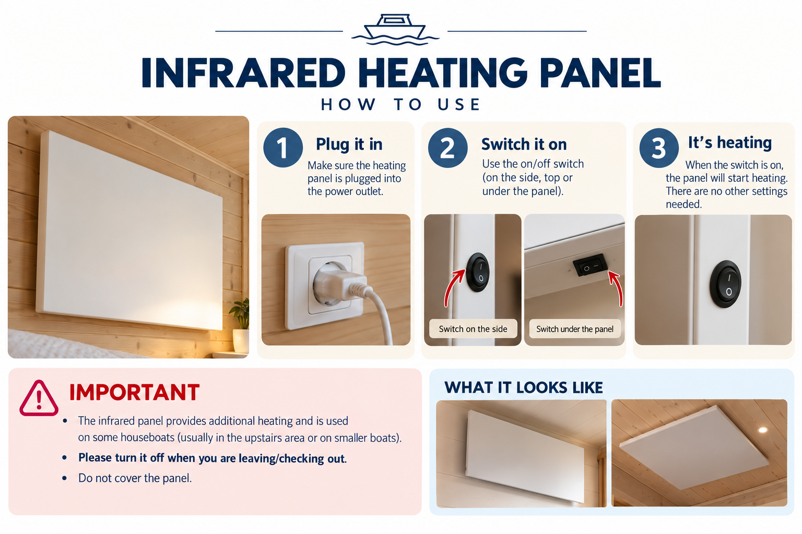

การทําความร้อนและการเย็น
ระบบรีโมทมีปุ่ม "MODE"
เพื่อทําความร้อนในห้อง กด MODE จนกว่าคุณจะเห็นสัญลักษณ์ HEAT หรือไอคอน SUN มันอาจจะใช้เวลาหลายนาที จนกว่าหน่วยจะเริ่มทําความร้อน
เพื่อให้ห้องเย็น กด MODE จนกว่าคุณจะเห็นสัญลักษณ์ COOL หรือไอคอน SNOW มันอาจจะใช้เวลาหลายนาที จนกว่าหน่วยจะเริ่มทําความร้อน
รูปแบบอื่น ๆ มักจะไม่ใช้
ไอคอนรีโมทสําหรับ A / C อาจแตกต่างกันเล็กน้อย


หน้านี้แปลโดยอัตโนมัติจากคู่มือภาษาอังกฤษ หากมีข้อสงสัย ให้ยึดฉบับภาษาอังกฤษเป็นหลัก ต้นฉบับภาษาอังกฤษ